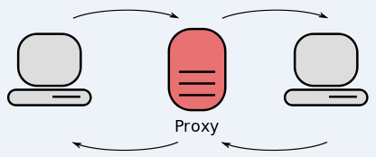

50% da internet são robôs
Agora tem mais bots do que humanos usando a internet (no protocolo HTTP) e hoje nós vamos falar do porquê. Obviamente é culpa do capitalismo, mas tem proxy, fazendo de bots e iptv aí no meio do esquema.
Veja no canal:
- Recentemente a Cloudflare lançou um relatório que avisava: agora mais do que 50% do tráfego do protocolo HTTP é feito por robôs
https://radar.cloudflare.com/traffic#bot-vs-human
- Também recentemente a rede de proxy residencial NetNut foi desbaratada pelo FBI com ajuda do Google e Lumen (empresa de rede nos EUA)

- É uma empresa de VPN/proxy residencial, ou seja, ela vende para você IPs residenciais que podem ser usados para acessar a internet

- E para falar dessas empresas que revendem proxy precisamos falar das ‘botnets’:
https://krebsonsecurity.com/2025/10/aisuru-botnet-shifts-from-ddos-to-residential-proxies/
Identificado pela primeira vez em agosto de 2024, o Aisuru propagou-se para pelo menos 700.000 sistemas IoT, como roteadores de internet e câmeras de segurança com segurança precária. Os operadores do Aisuru utilizaram sua enorme botnet para atacar alvos com ataques DDoS de grande repercussão, inundando os hosts visados com rajadas de solicitações inúteis provenientes de todos os sistemas infectados simultaneamente.
-
Muitas dessas botnets agem com um modelo de negócios criminoso e legal ao mesmo tempo
- Captação de dispositivos “legal” e “ilegal”
- Uso para DDoS, mas também para proxy residencial
-
E quem precisa de proxy para fingir que é um endereço residencial? Elas mesmo: as empresas fazendo raspagens de dados para treinar IA
-
Tráfego automatizado não necessariamente é um problema, o problema é o sistema de incentivos econômicos que degrada a internet livre e aberta numa rede que só serve para gerar lucro
- Cibercrime “de varejo” compensa: gangues cada vez mais profissionalizadas e poderosas
- Crime das big techs compensa: construa produtos valiosíssimos baseado no roubo de todos sites da internet e inunde ela de conteúdo inútil
-
A internet não deixou de ser humana porque está lotada de bots, ela está lotada de bots porque ela não serve para os interesses dos humanos e sim do capital